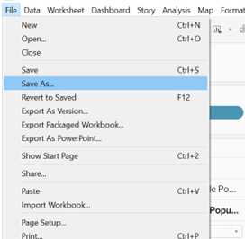

Take-home Exercise 1
1. The Task
[Age-sex pyramid]is an analytical visualisation commonly used by demographers to reveal the structure of population by gender and age group. In this take-home exercise, we will reveal the demographic structure of Singapore at planning area level by using age-sex pyramid method. we are required to display nine selected planning areas on a single view by using [trellis display (also know as small-multiple plot)].
2. The Designing Tool
For the purpose of this take-home exercise, Tableau desktop will be used to design the analytical visualization.
3. The Data
Singapore Residents by Planning Area / Subzone, Age Group, Sex and Type of Dwelling, June 2022 should be used to prepare the analytical visualisation. It is available at Department of Statistics, Singapore(in short SingStat).
4. Download Data
First of all, download two data sets from the website.

We get for respopagesextod2022e.xlsx Singapore Residents by Planning Area / Subzone, Age Group, Sex and Type of Dwelling, June 2022.xlsx(377KB), and respopagesextod2022.zip for Singapore Residents by Planning Area / Subzone, Age Group, Sex and Type of Dwelling, June 2022.csv(5MB).
Secondly, unzip the respopagesextod2022.zip, we will get Notes_respopagesextod2022.csv and respopagesextod2022.csv. In my study, I will use the respopagesextod2022.csv. Because “Males” and “Females” have already been stacked in one column whereas respopagesextod2022e has not.
5. Step by step description
1. Load the respopagesextod2022.csv into Tableau Prep Builders. Click the check box of ‘Use Data Interpreter’.
2. Scan through the data details and change the “Time” from data type “number” to “date”.
3. Create rows and columns for 3*3 pyramid.
4. Go to the sheet1, click the “Sex”, add on calculation field for Male Population and Female Population.
5. Group “ages” shown in the following.
6. Drag the data fields into the columns and rows as following.
7. Change
8. Filter the PA, select the top 9 planning areas which have most the population.
9. Put the PA into the details under Marks/All.

10. Change the chart to a pyramid view by editing the axis for the Female Population field. Right click on the axis for Female Population field and select “Edit Axis”.
## In the popped up window, under the section “Scale”, tick the check-box for “Reversed” to reverse the axis for the Female Population field.
10. Change the Female bar color from blue to red.
11. Sort descending for the age group.
12. Remove index of rows by click the “show header” to make the chart bigger for viewing.
13. Proper labeling.
Drag the PA into the label under Marks/All.
Select the following settings for SUM(Female Population).
Drag the Female Population to the label under Female Population, drag the Male Population to the label under Male Population.
Click the label under the Female Population and select the following setting, do the same thing for Male Population.
14. Format the numbers of SUM(Female Population) from automatic to Number(custom)–Thousands(K), decimal is “0”.
Do the same thing for Male population.
15. Change the name of sheet1 to “Demographic structure of Singapore at top 9 population planning area in June 2022”.
16. Create dashboard. Click the New Dashboard.
drag the sheet into the right “drop sheets here”.
Change the dashboard name to “Demographic structure of Singapore at top 9 population planning area in June 2022”.
17. Save the file to Take-home Exercise 1.
